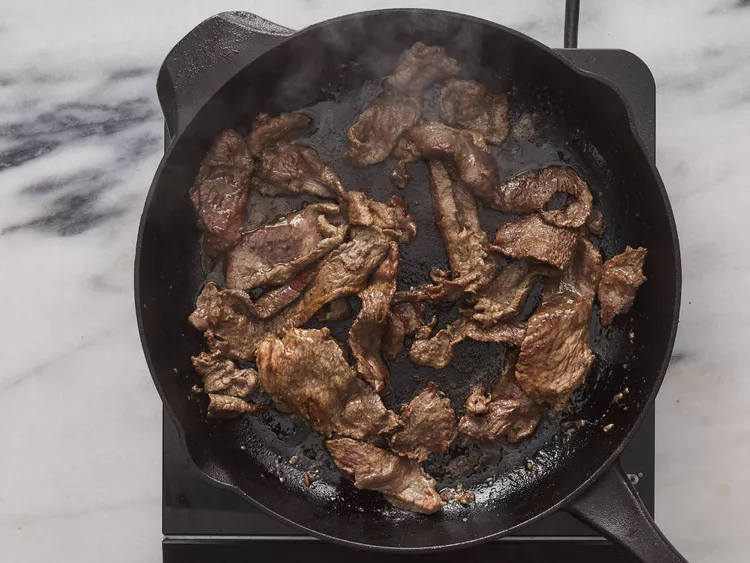

-
Step 1
Gather all Ingredients

-
Step 2
Sprinkle beef sirloin strip with garlic powder. Heat vegetable oil in a large skillet over medium heat and sear beef strips, about 5 minutes per side. Transfer to a slow cooker.
 -
Step 3
Mix bouillon cube with hot water in a seperate container until dissolved, then mix in cornstarch until dissolved.

-
Step 4
Pour into the slow cooker with beef strips, Stir in onion, green peppers, stewed tomatoes, soy sauce, sugar, and salt.
-
Step 5
Cover, and cook on High for 3 to 4 hours, or on low for 6 to 8 hours.